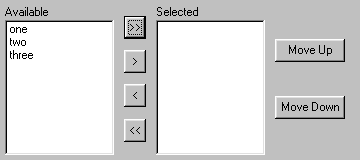

(list)
This control has two ListBoxes. The first contains the list passed in, and the second is initially empty. Buttons are provided for moving items to and from the second list, as well as re-ordering the items in the second list. The value of the control is the list contained in the right hand ListBox.
See also: ChooseTwoListControl